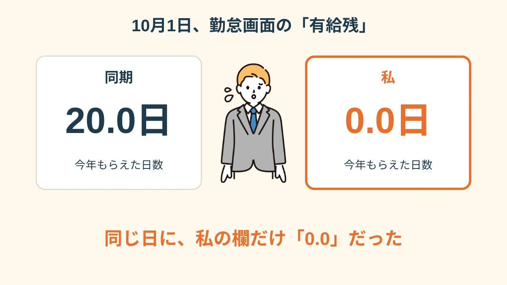
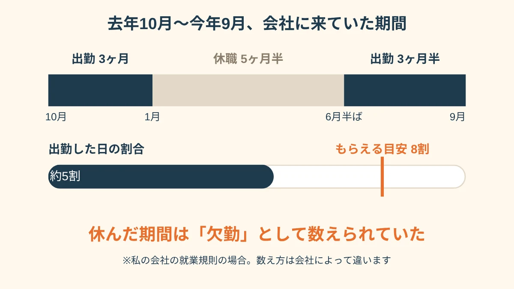
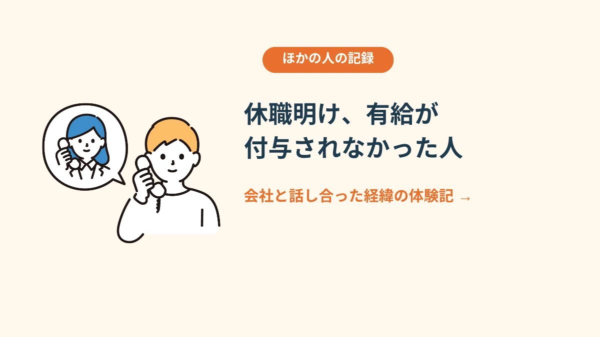
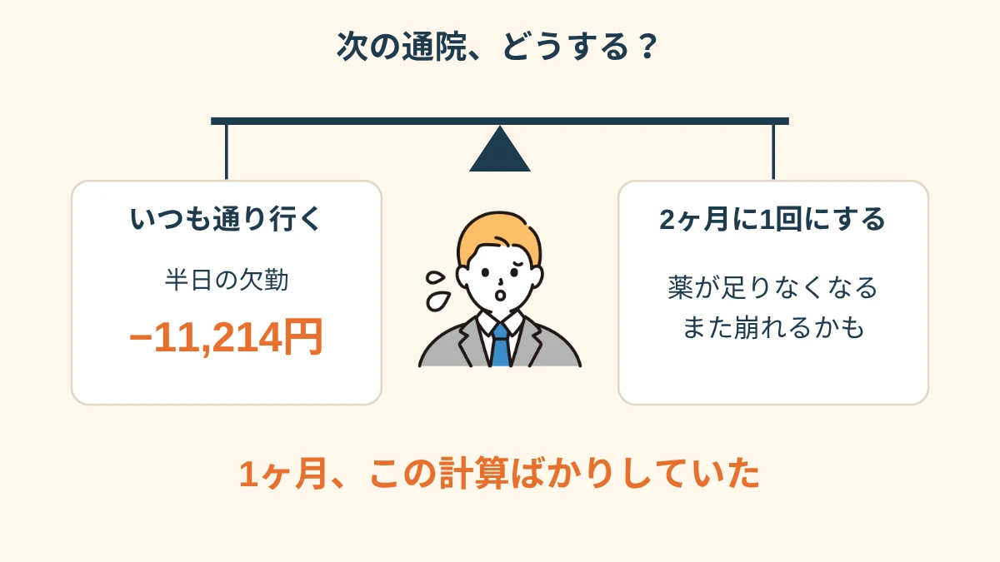
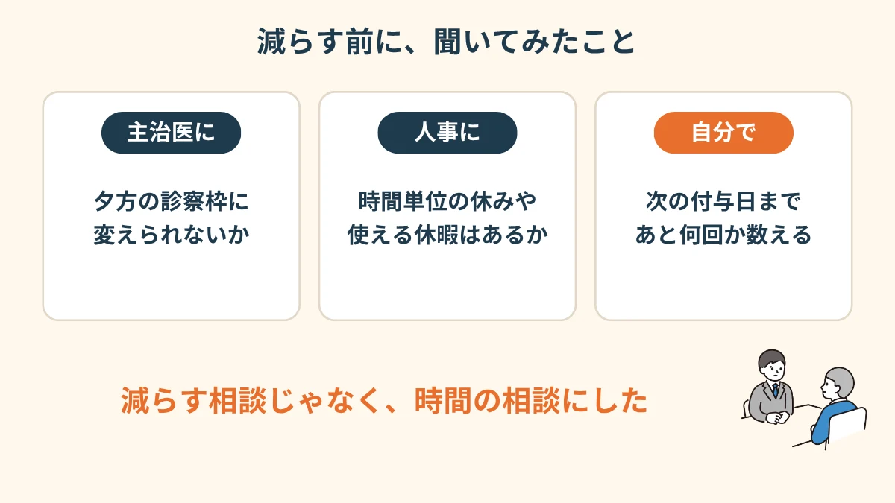
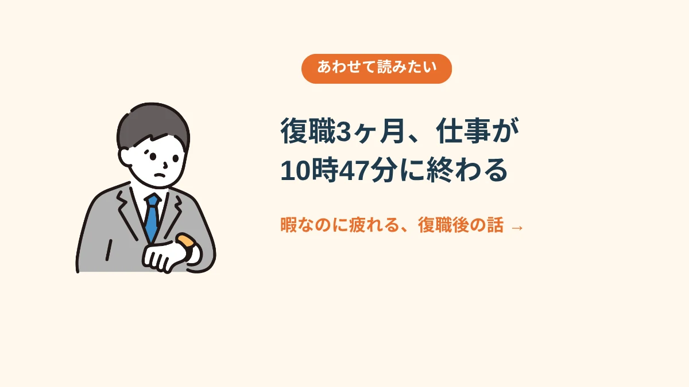
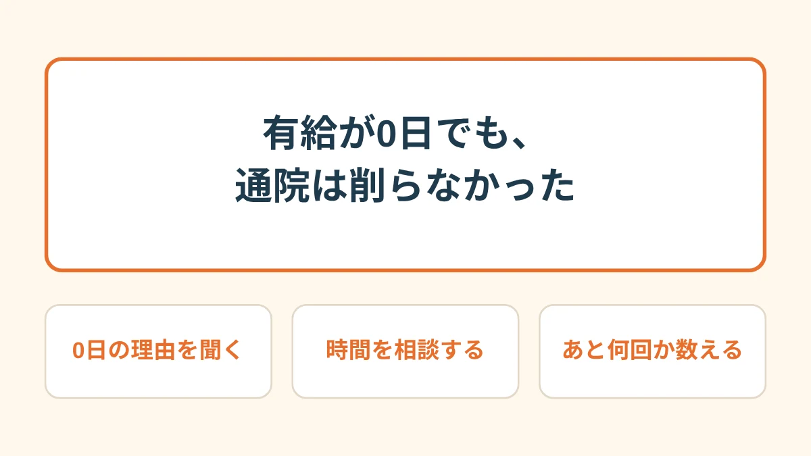

画面の右上に「有給残 0.0日」と出ていた。
見間違いかと思って、一回ログアウトして、もう一回入った。0.0日のままだった。
有給残の欄が「0.0」だった朝
34歳、物流会社で在庫管理の事務をしている。1月から休職して、6月の半ばに復職した。そこから3ヶ月半、遅刻も早退もしていない。自分ではわりと、ちゃんと戻れたつもりでいた。
昼休み、同期が喫煙所から戻ってきて言った。「今年も20日きたな。年末どっか行く？」
「あー、うん」とだけ返した。行くも行かないも、私の有給は0.0日だ。

システムの不具合かもしれない。そう思いたくて、人事に社内チャットで聞いた。「すみません、有給の付与が0日になっているのですが、確認いただけますか」。打っては消して、送るまでに20分かかった。
返事は30分後に来た。
「休職期間は、出勤率の計算では欠勤として扱われます。前年度の出勤率が8割に届かなかったため、今回は付与がありません。就業規則の第◯条をご確認ください」
丁寧な文章だった。間違ったことも、たぶん一つも書いていない。「そういう決まりなので」を、ちゃんとした日本語にするとこうなるんだな、と思った。「承知しました、ありがとうございます」と返して、チャットを閉じた。

あとで調べたら、同じことで会社と話し合った人の記録を見つけた。読みながら、自分だけじゃなかったんだ、と少しだけ肩の力が抜けた。

休職明けに有給が付かなかった人の体験記（外部サイト） →「私は時短で戻ったんですけど、有給がない年って、地味にずっと効くんですよ。子どもの熱で半日抜けても欠勤、通院も欠勤。給与明細に『欠勤控除』って行が毎月あって、金額より、その4文字が毎月目に入るのがしんどかったです。1年たって有給がついた日、正直ちょっと泣きました」
月1回の通院が「欠勤」になった
有給がないと、何が困るのか。一番は、通院だった。
復職してからも、月に1回、第2木曜の午前にクリニックに通っている。10時の予約で、薬をもらって会社に戻ると13時。今までは有給の半休で行っていた。
11月の第2木曜。勤怠の申請画面で、休みの種類を選ぶプルダウンを開いた。「有給（半日）」は灰色になっていて、押せなかった。残っているのは「欠勤（半日）」だけ。
マウスを持ったまま、しばらく動けなかった。たかが半日だ。分かってる。でも「欠勤」という字を、自分で選んで、自分で申請するのは、思っていたより嫌なものだった。
12月の給与明細には「欠勤控除 11,214円」と書いてあった。

そこから1ヶ月くらい、頭の中でずっと計算していた。月1回で年に12回。全部欠勤にしたら、ざっと13万。2ヶ月に1回にできたら、半分で済む。
次の診察で、本当に言いかけた。「あの、次から2ヶ月に1回って、できますか」。先生が「ん？」と顔を上げたところで、「あ、いや、なんでもないです」と言ってしまった。帰りの電車で、なんであそこで引っ込めたんだろうと思った。でも半分、ほっとしてもいた。
「シフト制の販売なんですけど、通院の日を希望休にすると、その月に自由に使える休みが1日減るんですよね。それが嫌で、半年くらい、具合悪くない日に無理やり行って、具合悪い日は我慢してました。完全に順番が逆なんですけど、そのときは分からなかった」

減らす相談じゃなく、時間の相談にした
12月の診察で、今度は最後まで言った。ただ、「回数を減らしたい」じゃなくて、「有給がなくて、通院が欠勤になってしまうんです」と、そのまま。
先生は「ああ、そういうことか」と言って、予約表をめくった。「減らすのは、今はおすすめしないかな。木曜なら夕方の枠があるよ。最終受付が18時」
定時は17時半。会社からクリニックまでは電車で20分。間に合う。半日休まなくても、行けたのだ。最初に聞けばよかった。

人事にも、もう一度だけ聞いた。今度は電話で。時間単位で休める制度は、有給が付いていないと使えないこと。病気のための特別な休暇は、うちの会社にはないこと。それから、「この1年ちゃんと出勤されていれば、来年の10月1日には付与される見込みです」と。最後の一言は、チャットのときにはなかった。
課長には「第2木曜だけは、定時で上がらせてください」とだけ伝えた。理由を聞かれたら通院と言うつもりで、セリフまで考えていたのに、課長は「了解」としか言わなかった。拍子抜けした。

復職後、上司に「これならできます」を伝えた人の話 →今、スマホのカレンダーの10月1日に「有給」と入れてある。通院の日には、小さく数字を書いている。12月は「10」。次の付与日まで、あと10回、という意味だ。
12月の通院は、夕方の枠で行けた。欠勤の字は、11月の1回だけで済んだ。済んだけど、あの朝の「0.0」は、正直まだちょっと根に持っている。たぶん、それでいいんだと思う。

この記事に、聞いてみたいことはありますか？
「自分の場合はどうなんだろう」と思ったことを、気軽に書いてみてください。いただいた質問は個別にお返事したうえで、匿名で記事にすることがあります。